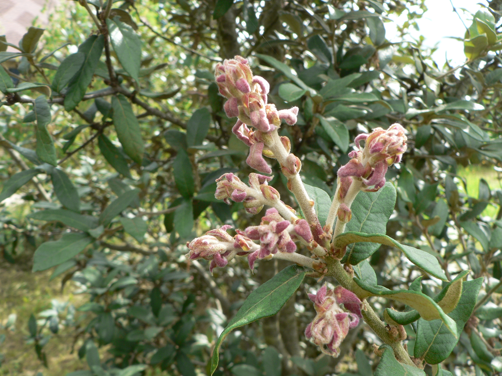
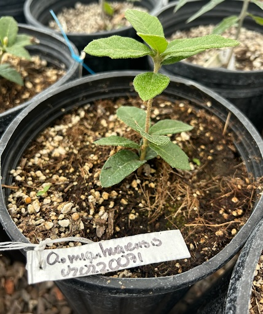
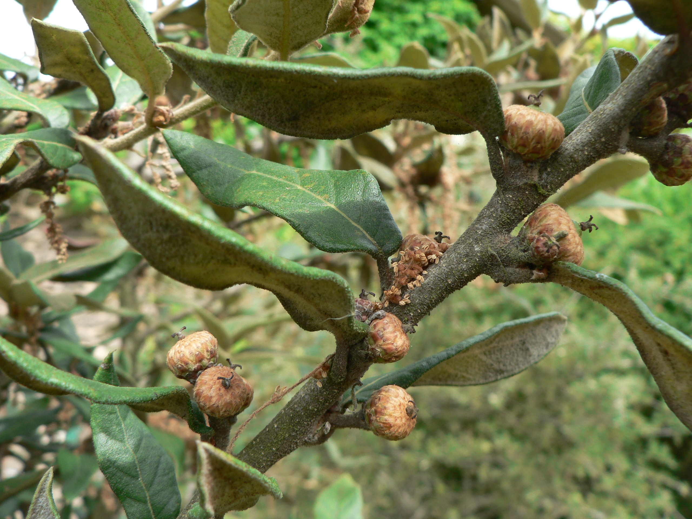
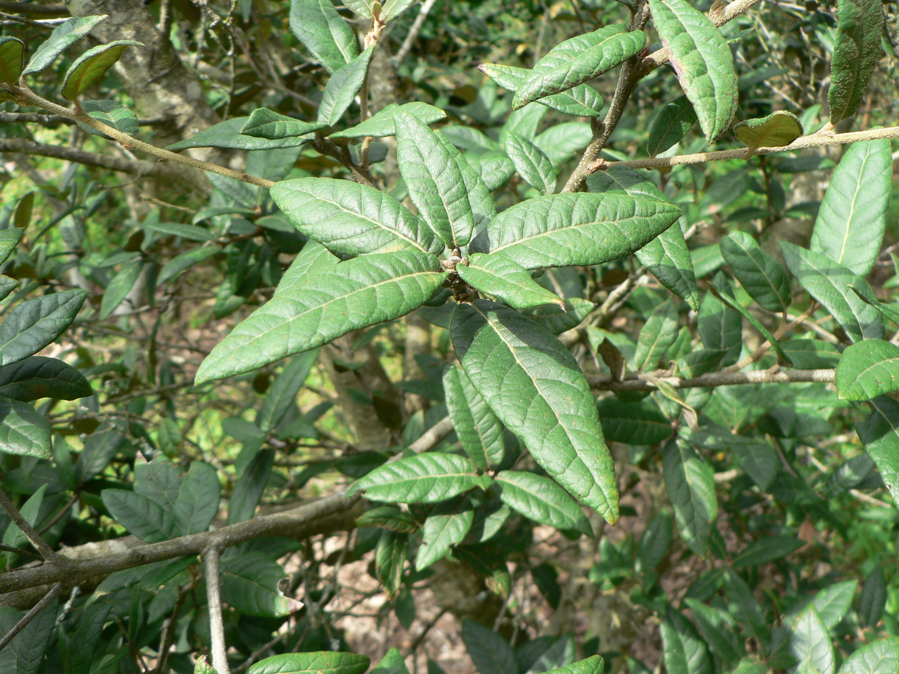
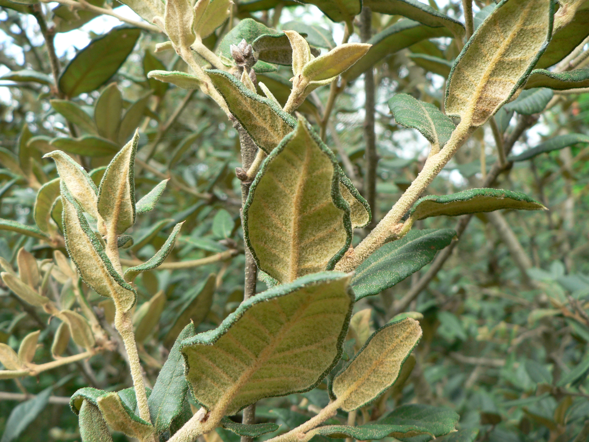
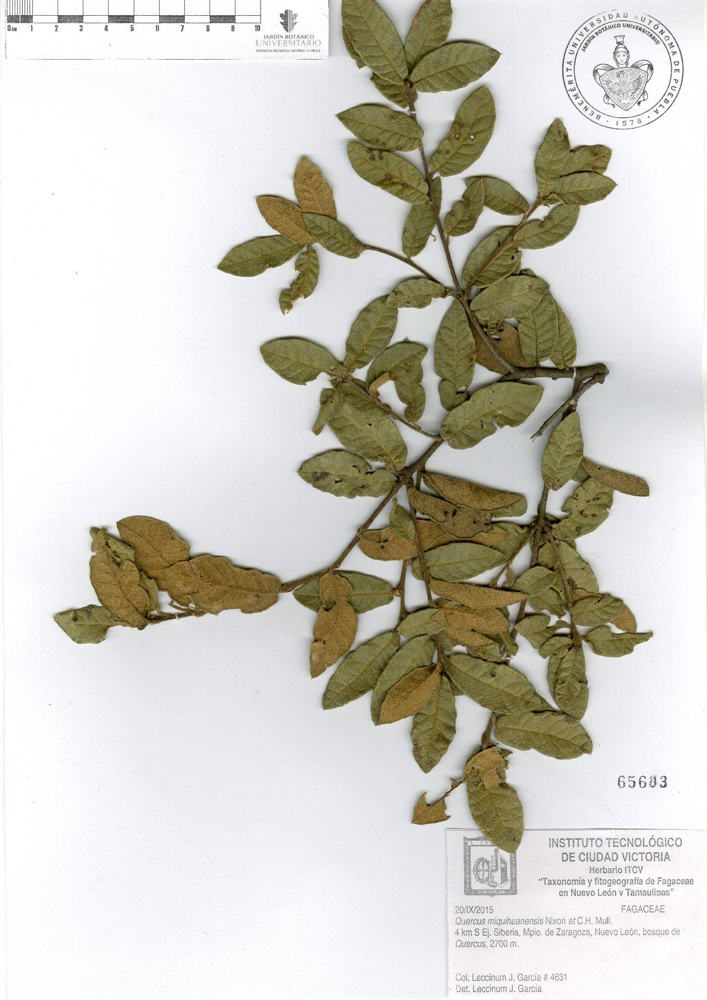

Quercus miquihuanensis
Endangered
B1ab(iii)+2ab(iii)






⟩
Occurrence Map
Click on each point for more information
Ex Situ Conservation
Geographic and Ecological Coverage
2022 Geographic Coverage: 0%
2026 Geographic Coverage: 11.25%
2022 Ecological Coverage: 0%
2026 Ecological Coverage: 66.67%
Number of Ex Situ Collections: 2
Protected Area Coverage
Red List Assessment
Species Profile (PDF)